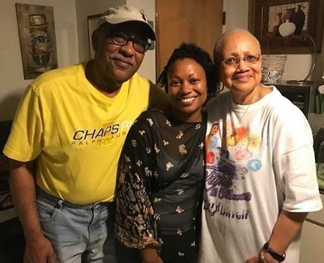
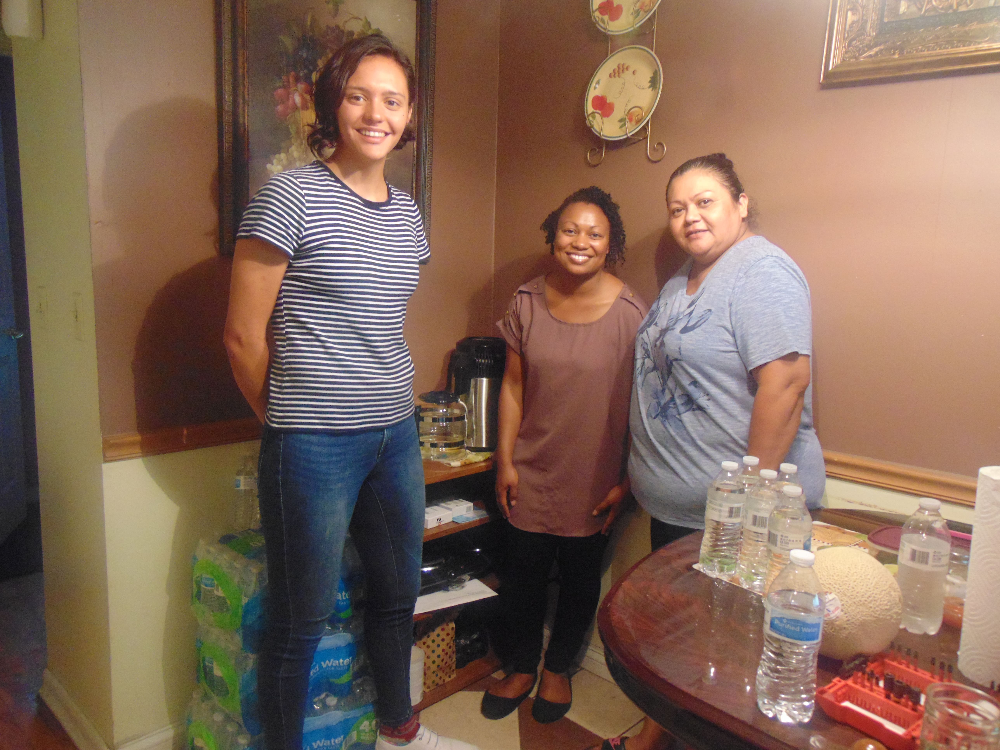
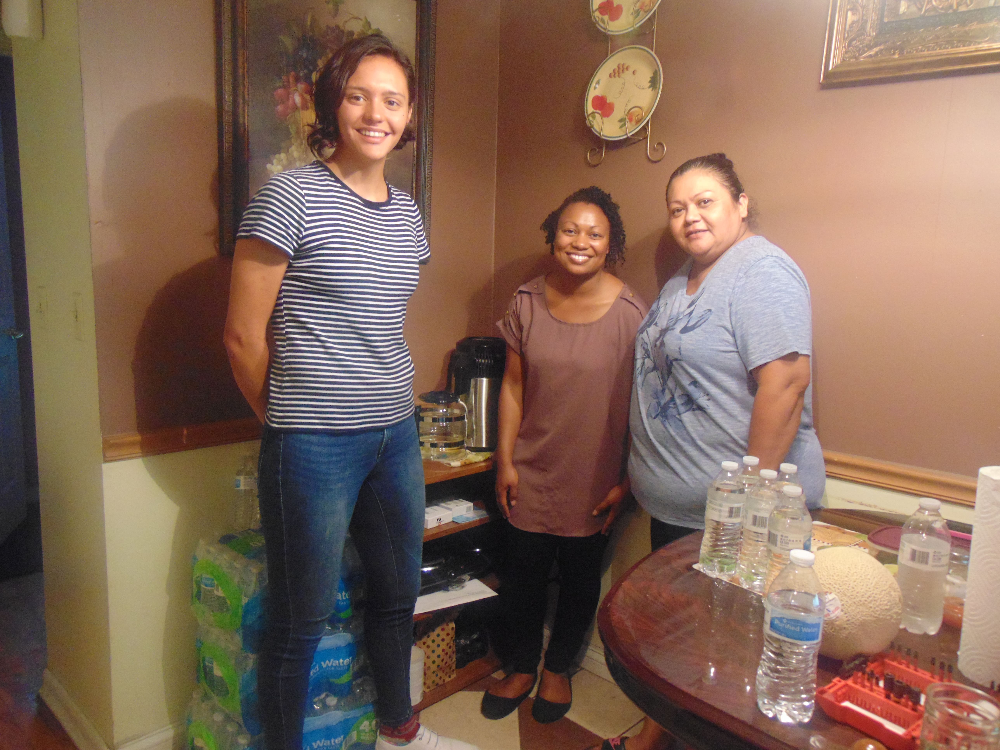
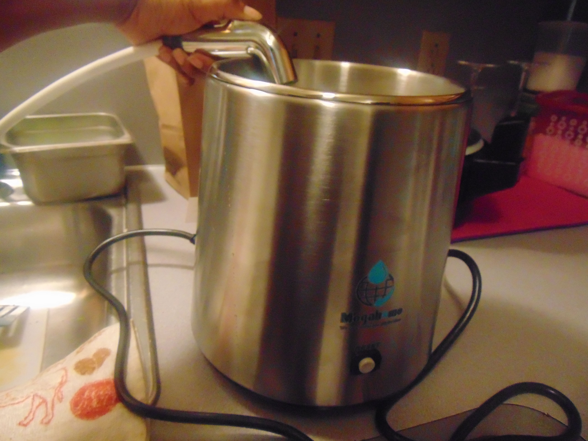
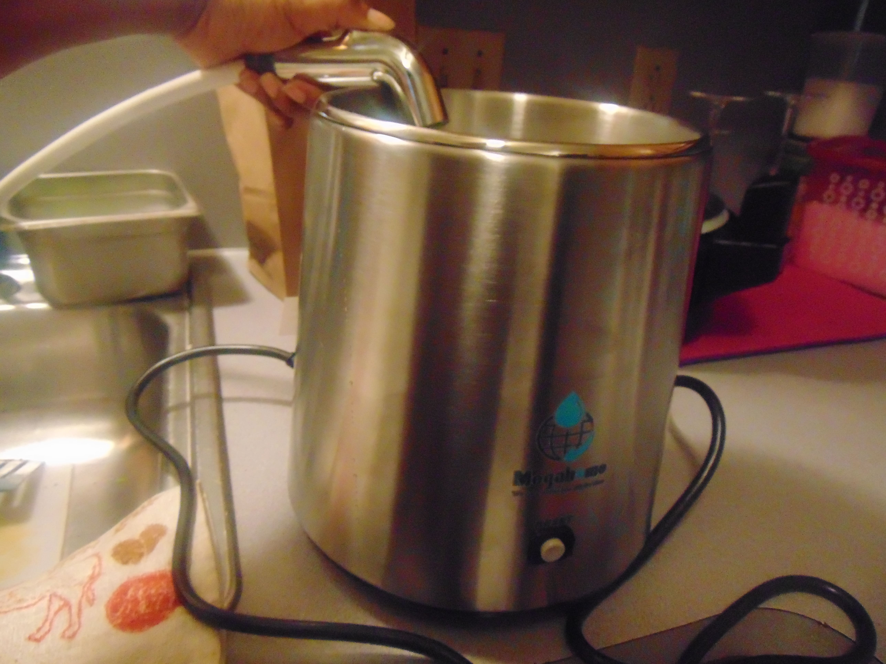

About Us
I'm Louis Williams. Long ago, sometime around the 1980s, a friend of mine was studying civil engineering and we were discussing how water infrastructure in most American cities have old systems. The pipe were laid in early century and were made of lead. We knew then that lead was dangerous to ingest at any level.
I started to buy 5 gallon bottles of filtered water, but it did not take me long to figure out with human error I was still taking a risk by purchasing filtered water as I learned most filters failed to clean water efficiently. It made sense to me that I can feel safe about distilled water that I processed myself because I'm the only one who can make sure of what I'm drinking is safe.
Also, having the convenience of not lugging five gallon bottles is great! My niece, Anura, and I saw this was another idea that would aid the folks in Flint to have a little more control of their lives. We want people to know that we are still watching and we care. We have not forgotten about Flint.
Keep goin' Flint,
Louis and Anura
 

 
